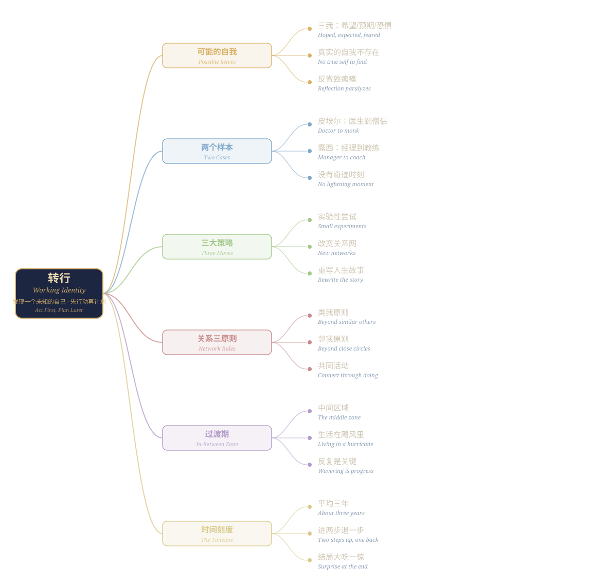

转行
〇 · 书籍信息
基本信息
| 书名 | 《转行：发现一个未知的自己》——埃米尼亚·伊瓦拉：INSEAD 商学院组织行为学教授、耶鲁大学心理学博士，曾任教哈佛商学院 13 年——用田野式访谈研究了一群真实转型者 |
|---|---|
| 结构 | 三部分：职业身份的转变（皮埃尔、露西等样本）→ 实践中的职业身份（实验性尝试 / 建立新的人脉 / 寻找职业转型的意义）→ 转型的深层改变——每章先破一条传统职业规划的智慧，再给替代做法 |
| 体裁 | 不是职业规划书，是行动研究：它不谈「你当时应该做什么」，只记录转型者实际做了什么——结论全部长在案例上 |
| 立场 | 反直觉宣言：从「先计划，再行动」翻转到「先行动，再计划」——反省不产生新自我，实践才产生：转型是动词，不是名词 |
| 一句话 | 没有等待被发掘的真实自我，只有被做出来的可能自我——转型不靠顿悟靠小步实验，平均要三年，而且注定要经历一段「生活在飓风里」的中间地带。 |
一 · 核心主题总览
数十个案例里反复出现的四组母题：① 没有真实的自我，只有可能的自我
传统方法教你「向内发掘真实的自我」，伊瓦拉借斯坦福心理学家马库斯的「可能的自我」把它拆掉：三我对照——希望我、预期我与恐惧我；「真实的自我」植根于过去，而「可能的自我」则立足于现在与未来。反省挖不出未来的我：「人们通过实践而不是通过『反省』来了解自己『可能的自我』」。
② 先行动，再计划
传统三步曲（确定职业目标→确定策略→按部就班实施）听上去安全踏实，伊瓦拉的研究却发现它「会导致最悲惨的结果：你会一无所获」——软件开发有个说法：设计过度，迭代过慢，最终产品失败——「真实的自我」就是那个被过度设计的基础架构。转型没有 2.0 版本可以一键升级，只有一段过渡期里反复试穿。
③ 三个关键做法
成功转型的钥匙不是决心是动作：创造实验机会、改变关系网、解释我们正在经历的转变——实验让你低成本试穿新角色，新关系网让你看见旧圈子看不见的自己，叙事让你把转折点编进人生故事。类我、邻我、共同活动三原则告诉你：最可能帮你认识新自我的人，往往是你不熟悉的人。
④ 最了解你的人最可能阻碍你
转型期最意外的发现：「当你想要重塑自己新的职业身份的时候，最了解你的人反而最可能阻碍你，而不是帮助你」——家人朋友本意是支持，但他们往往会拼命保住你想摆脱的旧身份。所以导师要找圈外人：和他在一起，你能自由尝试新的自我，不必担心冒犯任何人的期待。
二 · 第一段 皮埃尔与露西 —— 两个转型样本—— 精神科医生到僧侣 · 技术经理到教练 ——
皮埃尔：从精神科医生到僧侣
38 岁的法国精神治疗医生、畅销书作者，13 岁在布列塔尼度假时读过一本佛教书，「后来那本书一直在我的脑海中挥之不去」。与一位寺院僧侣的晚宴相识把他引进了从未想过的领域：合作办研讨会、写书、去寺庙——「我认识了很多僧侣、信徒，并没有出现什么奇迹的时刻，也没想到要遁入佛门，只是觉得释然」——转型不是一道闪电，是一串越来越密的脚步。三年半准备加七年静修的入寺计划定了之后，他自己的结论是：「这既是一种翻天覆地的改变，也是一种一成不变」——跨度最大的转型，走的却是最连续的路径。
◆ 语言学习 · 概念 · 连续转型
| 试错学习 | 先行动再计划的新模式——与「先计划再行动」的对照组 |
|---|---|
| 实验性尝试 | 在不辞职的前提下对新角色做小投入——转型的第一动作 |
| 新旧并存 | 转型初期新旧自我不停打架——「漫长而痛苦的过渡阶段」 |
| 释然 | 皮埃尔对自己状态的用词——没有奇迹时刻的安心 |
句型 ｜ 「这既是一种翻天覆地的改变，也是一种一成不变。」——悖论句写尽转型真相：结果翻天覆地，路径一成不变——真正的巨变从不靠断裂完成。
露西：从技术经理到独立教练
46 岁的信息技术专家，20 岁辍学入行，梦想做分股权的高管。一位受雇于公司的顾问改变了她的自我叙事——她一边做经理一边请职业教练、参加研讨、回校读硕士，最终成为独立职业教练：「我喜欢我现在做的事情……有了一种从未有过的热情」。书的对照很锋利：皮埃尔有寺院接应，转型顺滑；露西单打独斗，「只能『捕到什么吃什么』」——转型难度是主观的：除了亲历者，谁又能说这个转型到底是难还是不难？露西的痛苦与勇气，不比出家少。
◆ 语言学习 · 概念 · 转型难度
| 角色榜样 | role model：可以从其身上看见「未来可能的自我」的人 |
|---|---|
| 学习共同体 | 成人在情境中学习——从外围工作做到圈子核心 |
| 导师 | 来自全新人脉的安全区——让你自由尝试新自我 |
| 捕到什么吃什么 | 自由职业者的觅食状态——转型勇气的日常面 |
习语 ｜ 「常春藤联盟的名片盒没有用，殷实的家底和家人的全力支持也无法减轻你的焦虑感。」——导论的这句话拆掉了资源神话：焦虑不由资产余额决定，由身份悬空决定。
三 · 第二段 可能的自我 —— 拆掉「真实自我」—— 三我 · 行为瘫痪 ——
三我：希望我、预期我、恐惧我
马库斯的「可能的自我」被译成汉语三折：希望我（希望自己达到的）、预期我（预期自己能达到的）、恐惧我（害怕成为的）。它对职业规划的直接改写：你并不可能通过在头脑中的「反省」来发现可能的自我；你需要甜头——「只有我们有了可以感觉、触摸和品尝到的诱人选项后，才会改变」；对「真实的自我」的执着导致多样性的丧失。基金经理夏洛特列出的七项选择里，「最佳选项往往出现在列表的最后」——清单不是答案，清单是给未来的自己留门。
◆ 语言学习 · 概念 · 可能的自我
| 可能的自我 | possible selves：马库斯提出的自我观——自我由实践塑造，非天赋待掘 |
|---|---|
| 希望我 | 梦想成为的角色——动力的正面来源 |
| 恐惧我 | 害怕堕成的角色——转型同样被它驱动 |
| 甜头 | 可感可触的新选项——改变的真实燃料，痛苦不是 |
句型 ｜ 「佛家有三毒：贪、嗔、痴……可能的自我是三我：希望我、预期我与恐惧我。」——译者以三字格对仗搭桥东西心理学：一个概念被翻译成了可背诵的口诀。
反省导致行为瘫痪
导论里最狠的一刀给了「自我分析」：软件开发的说法被借来诊断职业规划——「设计过度，迭代过慢，最终产品失败」：过于追求基础架构的强大，思考过度，认知资源衰竭，行为瘫痪，难以迈入新领域。苏珊的案例是反面教材：刚准备转型就接受了一份「新瓶装旧酒」的工作，因为不想惴惴不安就仓促上路——急于摆脱痛苦的本能，让她在没有想清价值观之前先锁死了出口。两块对照表（真实自我 vs 可能的自我、先计划 vs 试错）是全书的骨架：观点之争，其实是两种自我观之争。
◆ 语言学习 · 概念 · 行为瘫痪
| 真实的自我 | true self：传统方法的地基——伊瓦拉认为它根本不存在 |
|---|---|
| 行为瘫痪 | 过度反省的终点：机会在等待豁然开朗时溜走 |
| 新瓶装旧酒 | 苏珊的失策：转型期用旧思维接新工作 |
| 两不着边 | 转型中间态：旧角色未抛、新角色未立 |
习语 ｜ 「设计过度，迭代过慢，最终产品失败。」——用工程术语写人生：人生是敏捷开发，不是瀑布模型——先上线，再迭代。
四 · 第三段 三大策略 —— 实验 · 人脉 · 叙事—— 小实验 · 三原则 · 新故事 ——
实验性的尝试
第五章的核心方法：做一些小的探索或小项目，「在一个有限但切合实际的范围里找到新的职业角色，而不是盲目地朝一个特定的方向发展」——相比于「大爆炸」式的探索，这些低风险的方法让探索的组合更加多样化：做项目、做兼职、临时任务、第二职业、成立小公司。商学院教授本的路径是范本：先接一个副业非营利项目，两年期休假期间试运营，验证可行才辞职——「每一次尝试都使得我们的优先事项更加明确，这可以使我们从开放性问题进阶到更严格的测试中」。
◆ 语言学习 · 概念 · 实验设计
| 小实验 | 业余兼职、周末项目——转型的最小可行产品 |
|---|---|
| 两段式分析 | 先选一两个新活动，再配评估方法——实验要有对照组 |
| 成本最小化 | 不押上现职——转型的风控纪律 |
| 评估收获 | 实验必有代价，所以要问：我到底收获了吗 |
句型 ｜ 「最佳的转变职业生涯的方法是立即将至少一个选择带入到现实中进行考量。」——清单文化被一句话叫停：至少一个选择，今天就进现实——这是全书最接近行动口号的一句。
改变关系网：三原则与新故事
第六章给出建网三原则：类我原则——避开性格生活环境类似的人（老乡校友）；邻我原则——避开同一生活圈子的人（同事）；共同活动原则——去志愿者组织等共同活动里结识新人。理论根据是学习科学：成人的最佳学习方式并非独自练习，而是在情境中学习——找到学习共同体，从外围工作做起，逐步进入核心成为专家，同时寻找一位角色榜样做新导师。最后一步是把转变讲成故事：发现或创造促成转变的催化剂，把「你过去是什么人」和「你将成为什么人」缝合成一条连贯的新叙事。
◆ 语言学习 · 概念 · 关系工程
| 类我原则 | 避开同类人——相似给你安慰，差异给你信息 |
|---|---|
| 邻我原则 | 避开同圈人——同事的期待会锁死旧身份 |
| 共同活动原则 | 在共同做事中认识人——关系长在活动里 |
| 意义建构 | 韦克的概念：把混乱的经历讲成通顺的故事 |
习语 ｜ 「最有可能帮助我们认识真正自我的人，往往是那些我们不熟悉的人。」——全书对「知音文化」的一次静悄悄的反驳：熟悉给你镜子里的自己，陌生给你镜子外的自己。
五 · 第四段 过渡期 —— 两不着边的中间地带—— 中间区域 · 飓风 · 三年 ——
中间区域：生活在飓风里
布里奇斯把从结束到新开始之间的时间称为「中间区域」——一个两不着边的心理区间：「我们正处于两个自我之间，一只脚稳稳地踩在旧的世界里，而另一只脚则试探性地踏入一个未知的新世界」——琼把这种经历形容为「生活在飓风里」。伊瓦拉接着反转期待：「在维持现状和拥抱未来间犹豫不决……实际上这种反复并不是一个人没有做好准备的信号，而是转型成功的关键」——避免过早离职、直到完全找到新职业，靠的正是这段看似低产的徘徊。
◆ 语言学习 · 概念 · 过渡期心理
| 中间区域 | 布里奇斯的命名：身份充满变数的心理区间 |
|---|---|
| 两不着边 | 旧世界踩得住、新世界踩不实的状态 |
| 飓风 | 琼对过渡期的形容：期待、迷茫、恐惧交织 |
| 反复 | 矛盾心理的技术含义——不是退步，是引擎 |
句型 ｜ 「一只脚稳稳地踩在旧的世界里，而另一只脚则试探性地踏入一个未知的新世界。」——身体意象写身份悬空：单脚站立的时间越长，新世界的落点越准。
三年之约与欲速则不达
时间刻度被反复给出：「大多数职业生涯的转变都需要 3 年左右的时间，这个轨迹很少成为一条直线——我们进两步退一步，最终驻足的地方会让自己大吃一惊」；出版人鲁宾的回忆录印证：「从一个人决定离开一个公司到他真正走出这一步，平均需要 3 年时间。那几年是比较难熬的，也没钱可挣」。布里奇斯的安慰有分量：中间地带「表面上没有目标明确的活动，实际上我们有着重要的内心活动」——结束一件事与找到替代职业，各有各的工期，缩短这段不赚钱的阶段可能欲速则不达。
◆ 语言学习 · 概念 · 转型时间学
| 三年之约 | 转型期的经验均值——预算与心理都要按三年配置 |
|---|---|
| 进两步退一步 | 转型轨迹的真实形状——很少是直线 |
| 内心活动 | 中间地带看不见的工程：告别与重建并行 |
| 大吃一惊 | 终点与起点的落差——你最终去的地方常超出清单 |
习语 ｜ 「最终驻足的地方会让自己大吃一惊。」——全书唯一的开放式结尾：转型设计不出来，只能被走出来——这句话把「计划」二字最后的体面也收走了。
六 · 人物图鉴与成长弧线—— 主角配角 · 一张表看穿 ——
主要人物
伊瓦拉（Herminia Ibarra）——INSEAD 组织行为学教授、耶鲁心理学博士、哈佛执教 13 年——用人类学式的田野访谈写出一部反规划的行动研究：她不给建议清单，只给行为证据
皮埃尔——法国精神治疗医生→佛教僧侣——全书跨度最大的转型样本：13 岁的书种下 25 年后的出家，证明转型的种子可以沉睡几十年
露西——硅谷技术经理→独立职业教练——「温和」转型的勇气代表：留在行业里改写身份，往往比远走更难
黑兹尔·马库斯——斯坦福心理学家、「可能的自我」概念提出者——全书理论地基：自我由实践塑造，不是天赋待发掘的矿石
次要人物（功能位）
| 本 | 商学院教授→非营利组织总监——实验性尝试的教科书样本：副业两年、休假试运营、验证后才辞职 |
|---|---|
| 苏珊 | 「新瓶装旧酒」的失策样本——为了逃避痛苦仓促转型，反被旧思维锁定：转型时机比转型决心重要 |
| 布里奇斯 | 转型专家、「中间区域」概念的作者——为两不着边的岁月正名：没有明确目标的活动，不等于没有重要活动 |
| 琼 | 「生活在飓风里」的亲历者——过渡期感受的第一证人：飓风不是你走错了路，是你在路上 |
七 · 主题与象征—— 每个道具都在说话 ——
| 三我 ↔ 调色盘 | 希望我 · 预期我 · 恐惧我——自我不是一个待选答案，是一排待试颜色 |
|---|---|
| 试穿衣服 ↔ 转型 | 加里的比喻：新衣服先试穿才能找到尺寸——身份也有试衣间，名字叫小实验 |
| 飓风 ↔ 过渡期 | 琼的意象——风眼外都是混乱，风眼里藏着方向 |
| 三年 ↔ 工期 | 鲁宾与伊瓦拉的双重证词——给转型估预算的人，先估时间 |
| 名片盒 ↔ 旧身份 | 常春藤的名片盒没有用——旧身份的全部道具，在新叙事里都是废纸 |
八 · 写作手法赏析—— 怎么写，就能怎么学 ——
① 案例先行
数十个转型者的行为记录——结论长在故事上，故事先于理论
② 破立结构
每章先破一条传统智慧再给替代方案——读者先被说服，再被指导
③ 心理学嫁接
马库斯、布里奇斯、沙因、韦克的概念被织进案例——理论不悬空，概念都有主人
④ 双语翻译
译者以三字格（三毒/三我）对搭东西方心理学——概念的翻译本身就是一次创作
九 · 名段欣赏—— 原文精读 · 逐段赏析 ——
十 · 金句摘录—— 14 条 · 中英对照 · 带出处 ——
"你需要从「先计划，再行动」到「先行动，再计划」。"—— 导论
"「真实的自我」植根于过去，而「可能的自我」则立足于现在与未来。"—— 导论
"人们通过实践而不是通过「反省」来了解自己「可能的自我」。"—— 导论
"只有我们有了可以感觉、触摸和品尝到的诱人选项后，才会改变。"—— 导论
"当你想要重塑自己新的职业身份的时候，最了解你的人反而最可能阻碍你，而不是帮助你。"—— 导论
"大多数职业生涯的转变都需要3年左右的时间，这个轨迹很少成为一条直线——我们进两步退一步，最终驻足的地方会让自己大吃一惊。"—— 导论
"职业身份其实是一个实践的过程：通过一系列明确的步骤，去建立和形成可能的自我。"—— 导论
"最有可能帮助我们认识真正自我的人，往往是那些我们不熟悉的人。"—— 导论 · 改变关系网
"并没有出现什么奇迹的时刻，也没想到要遁入佛门，只是觉得释然。"—— 第1章 · 皮埃尔
"这既是一种翻天覆地的改变，也是一种一成不变。"—— 第1章 · 皮埃尔
"她毕竟是个自由职业者，只能「捕到什么吃什么」。"—— 第1章 · 露西
"我们正处于两个自我之间，一只脚稳稳地踩在旧的世界里，而另一只脚则试探性地踏入一个未知的新世界。"—— 第4章 · 琼
"琼把这种经历形容为「生活在飓风里」。"—— 第4章
"从一个人决定离开一个公司到他真正走出这一步，平均需要3年时间。"—— 鲁宾的回忆录 · 转引
十一 · 拓展阅读—— 原文 · 词条 · 译文 ——
十二 · 个人感悟与心得—— 三点心得 ——
三点感悟
① 把转型当成项目做
伊瓦拉给的不只是勇气，是项目管理：小实验要控制成本、要配评估方法、要防止被偏好污染结论——职业转型和产品开发共享同一套工程纪律。
② 关系网是资产也是负债
三原则的启示超出求职：你的信息质量由网络的多样性决定——舒适圈里的意见高度相关，等于没意见；定期给关系网「换血」，是认知层面的资产再平衡。
③ 给过渡期立项
三年工期、两不着边、反复是常态——过渡期不是通往新工作的走廊，它本身就是工作：告别一件事与找到替代职业各有工期。把内心活动当正经事做，飓风就有了航线。
这本书把人生规划倒了个个儿：不是先画好地图再上路，是上路了地图才慢慢显影——那个未知的自己，不在原地等你，在前方的每一步实验里等你。
十三 · 一页速查（复习用）
| 核心翻案 | 先计划再行动 → 先行动再计划：反省不产出新自我，实践才产出 |
|---|---|
| 可能的自我 | 马库斯三我：希望我 / 预期我 / 恐惧我——自我立足现在与未来 |
| 三大策略 | 创造实验机会 · 改变关系网（类我/邻我/共同活动）· 为转变做出解释 |
| 两个样本 | 皮埃尔（医生→僧侣）跨度最大路径最连续；露西（经理→教练）看似温和实则孤勇 |
| 过渡期 | 中间区域两不着边、反复是成功的关键、平均三年——终点常让你大吃一惊 |
十四 · 全书思维导图—— 一图纵览 ——

一图纵览全书骨架 · 中英双语对照 · 手机端可左右滑动查看全图